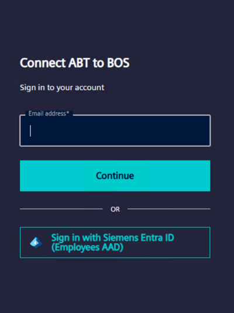
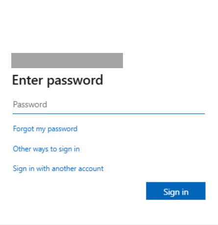
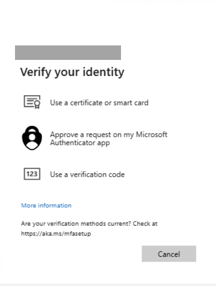
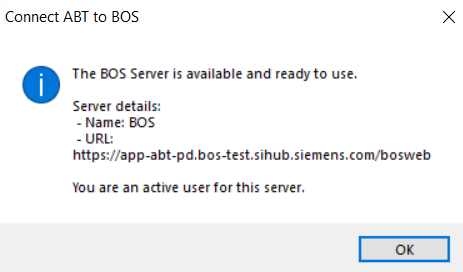
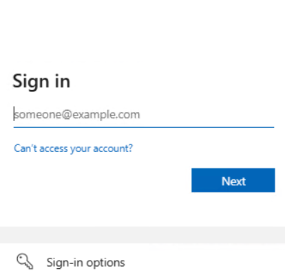

Sign in and connect to BOS server
For an efficient log in process into the Connect ABT to BOS application, users have to login using multi-factor authentication. Administrators have the rights to give access and security permissions to the users. Non-administrators have roles according to the access given by the administrators.
When the user signs into the BOS application, he will be directly connected to the BOS server.
To perform the BOS server setup, see Shared Options in Define settings.
To set up a user account, see Set up an user account.

Users can access only Settings operations without logging into the application.
Signing in - Method 1 (Siemens users)
- An active user account for ABT BOS is available.
- Launch the Connect ABT to BOS application.
- Click Sign in on the menu bar.
- In the Connect ABT to BOS window, enter the Siemens email address and click Continue.

- Enter the password and click Sign in.

- In the authentication window, use any one authentication method to verify the details and click Verify.

- You are signed into the BOS application. A message displays stating that the BOS server is available and ready to use.

Make sure the administrator has added your user information to the BOS server.
If the user details are not available in the BOS server, the user is prompted to create a new account on login.
Signing in - Method 2 (Siemens users)
- An active user account is available.
- Launch the Connect ABT to BOS application.
- Click Sign in on the menu bar.
- In the Connect ABT to BOS window that opens, click Sign in with Siemens Entra ID (Employees AAD).
- Enter the Siemens email address and click Next.

- (Optional) Alternatively you can click Sign-in options.
- In the Windows Security dialog box, use any one authentication method to verify your identity.
- You are signed into the BOS application.
- Enter the password and click Sign in.
- In the authentication window, use any one authentication method to verify the details and click Verify.
- You are signed into the BOS application. A message displays stating that the BOS server is available and ready to use.
- User and server connection details appears on the top right side of the window.
Signing in - Method 3 (external users)
- An active user account is available.
- Launch the Connect ABT to BOS application.
- Click Sign in on the menu bar.
- In the Connect ABT to BOS window, enter the email address and click Continue.
- Enter the password and click Log in.
- In the authentication window, use any one authentication method to verify the details and click Continue.
- You are signed into the BOS application. A message displays stating that the BOS server is available and ready to use.
- User and server connection details appears on the top right side of the window.